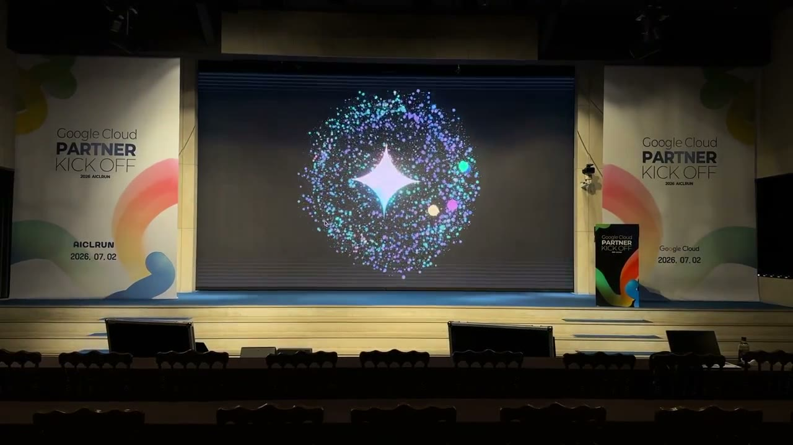
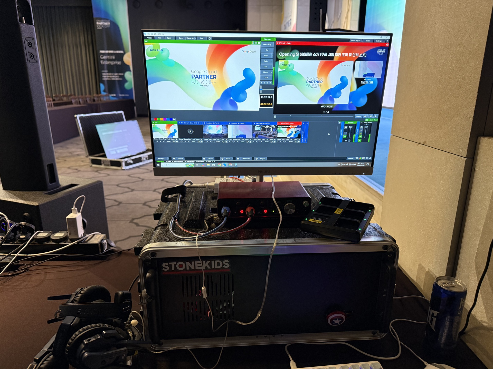
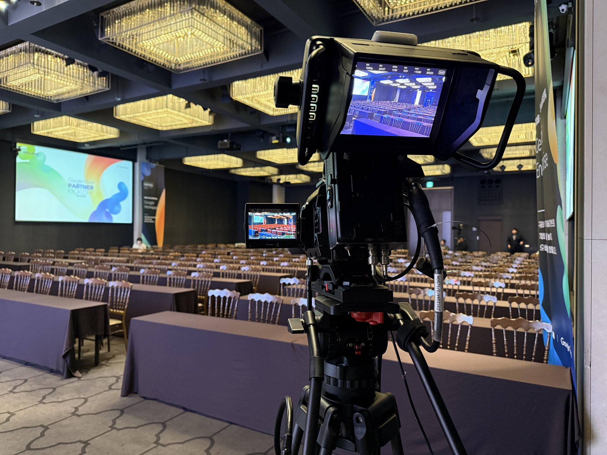
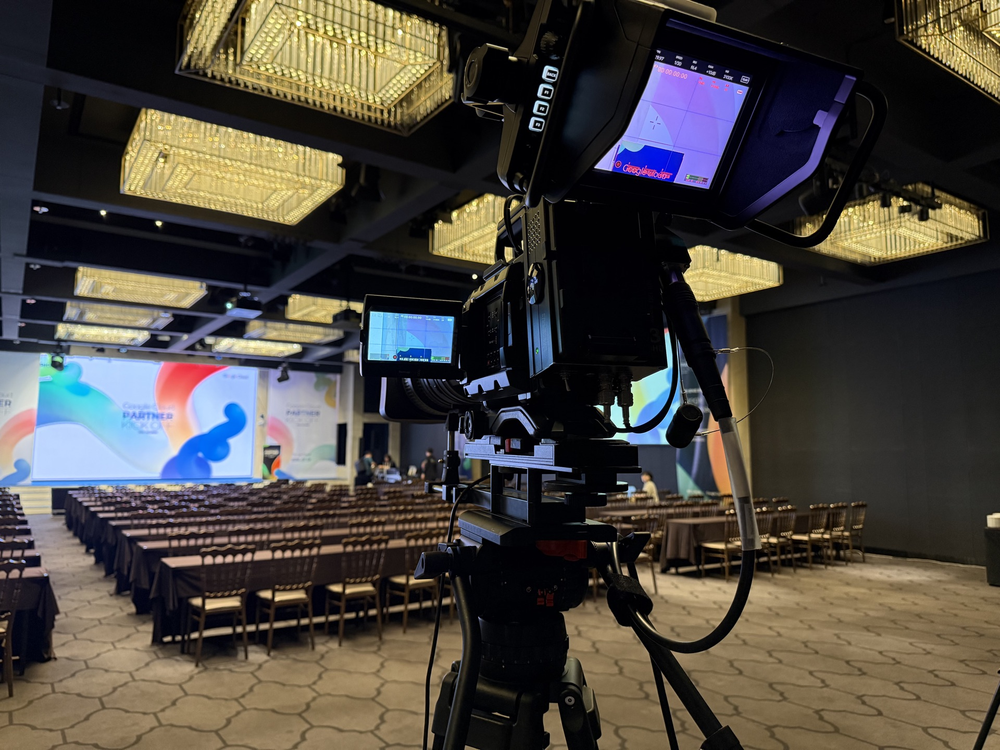
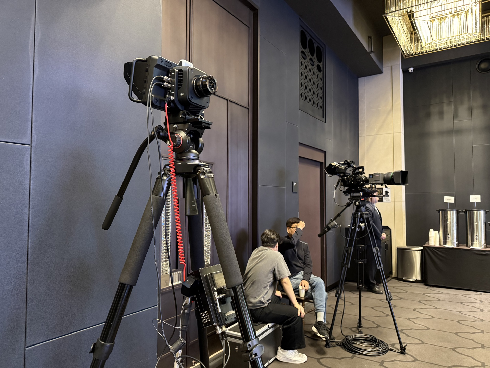
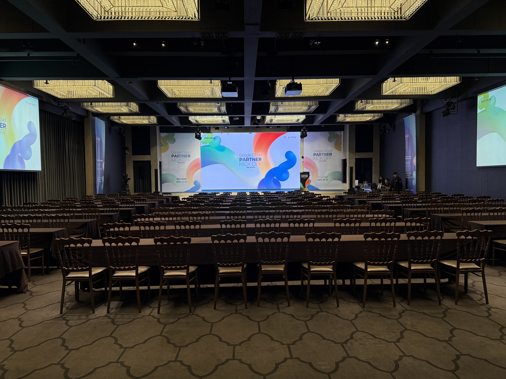
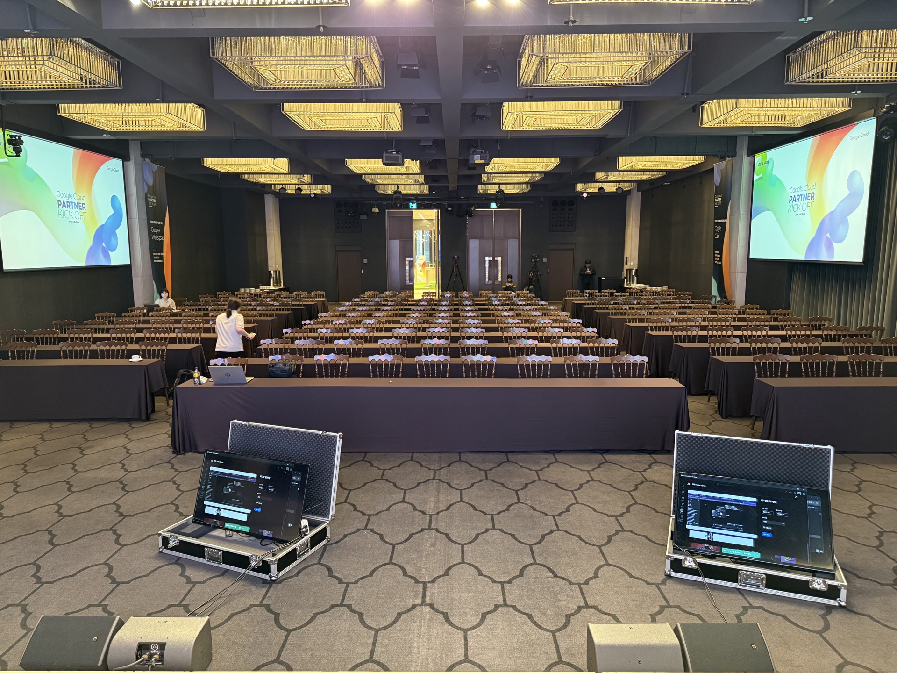

구글 클라우드와 파트너사가 한자리에 모인 킥오프. 스톤키즈는 이 무대를 매끄럽게 중계하고, 무대 위 LED에 ‘들리는 나레이션’을 ‘보이는 장면’으로 바꿔 올렸습니다.
주최 · AICLRUN (Google Cloud Partner)2026. 07. 02.멀티캠 중계LED · 스크린 운용Gemini 음성 반응 비주얼

행사장 메인 LED에 실시간 송출된 스톤키즈의 Gemini 음성 반응 비주얼 — 오프닝 나레이션에 맞춰 반응합니다.
CHAPTER 01 — 발단
구글 클라우드 파트너들의 출발선
AICLRUN이 주최한 Google Cloud Partner Kick Off 2026. 구글 클라우드와 파트너사가 한 해의 시작을 함께 여는 자리였습니다. 스톤키즈에 주어진 몫은 세 가지였습니다 — 행사를 놓치는 순간 없이 중계하고, 무대의 LED와 스크린을 운용하며, 오프닝을 기억에 남는 한 장면으로 여는 것.
흔한 방식이라면 오프닝에 로고와 자막을 띄웠겠죠. 하지만 주제가 ‘AI’인 행사에서, 우리는 한 걸음 더 갔습니다. 사회자의 나레이션이 흐르는 동안 그 목소리에 실시간으로 반응하는 Gemini 스타일 비주얼을 우리가 직접 만들어 무대 정면 LED에 올렸습니다.
CHAPTER 02 — 현장 중계
여러 대의 카메라를, 한 줄기 방송으로
무대·발표자·객석을 동시에 담기 위해 여러 대의 방송 카메라를 배치했습니다. 각 카메라 신호는 DeckLink 8K Pro로 캡처해 vMix 4K 라이브 스위처 한 대로 모았고, 발표 슬라이드·중계 화면·오디오까지 실시간으로 섞어 한 줄기 방송으로 내보냈습니다.
01멀티캠 배치 — 무대 정면·측면·객석 앵글을 블랙매직 방송 카메라로 커버.
02신호 통합 — DeckLink 8K Pro로 각 카메라를 캡처, vMix 4K 한 대로 스위칭.
03실시간 운용 — 슬라이드·중계 화면·오디오 믹싱을 현장에서 라이브로.

스톤키즈 중계 콘솔 — vMix 4K 멀티 입력 스위칭 · 오디오 믹싱. 화면엔 킥오프 오프닝 슬라이드.

방송 카메라 뷰파인더 — 무대를 향한 라이브 프리뷰(1080p). 여러 앵글을 동시에 잡았습니다.

메인 스크린을 잡는 또 다른 카메라 — 발표와 그래픽을 함께 담기 위한 구도.

후면 카메라 라인 — 넓은 객석 풀샷과 무대 클로즈업을 나눠 담았습니다.
vMix 4KBlackmagic CamerasDeckLink 8K Pro라이브 오디오 믹싱
CHAPTER 03 — LED · 스크린 운용
무대 전체를 하나의 화면처럼
무대 중앙의 대형 LED월과 좌우 프로젝션 스크린을 함께 운용했습니다. 발표 자료, 중계 화면, 그리고 오프닝 비주얼까지 — 어느 자리에 앉아도 내용이 선명하게 읽히도록 화면을 배분하고, 발표 흐름에 맞춰 실시간으로 전환했습니다.

메인 LED월 + 좌우 스크린 — 무대 전체를 하나의 캔버스로.

객석에서 바라본 행사장 — 어느 자리에서도 화면이 선명하게 읽히도록 화면을 배분했습니다.
CHAPTER 04 — 나레이션을 ‘보이게’
우리가 만든, Gemini 음성 반응 비주얼
이번 행사의 하이라이트는 오프닝이었습니다. 사회자의 나레이션이 시작되면, 무대 정면 LED에 떠 있는 Gemini 스타일의 스파클과 성운이 그 목소리에 실시간으로 반응합니다. 말이 커지면 별이 피어나고, 잦아들면 잔잔히 숨을 고르는 식으로요.
중요한 건, 이 비주얼이 미리 만들어 둔 영상이 아니라 스톤키즈가 직접 개발한 실시간 프로그램이라는 점입니다. 마이크 입력을 받아 주파수 스펙트럼에 맞춰 반응하도록 Electron · Three.js로 만들었고, 구글 Gemini 비주얼 디자인의 문법(그라디언트·스파클·부드러운 모션)을 차용했습니다. 개발 과정은 스톤키즈 Lab에 정리해 두었습니다.
“나레이션은 귀로 듣는 것. 그걸 눈으로도 보이게 만들면, 오프닝은 한 장면이 됩니다.”
— 제작 노트
Gemini Visual — 자체 개발ElectronThree.jsWeb Audio · 실시간 음성 반응1920×1080 송출
CHAPTER 05 — 마무리
현장 프로덕션과, 직접 만든 도구
여러 대의 카메라를 한 줄기 방송으로 묶는 중계 운영, 무대 전체를 하나로 다루는 LED 운용, 그리고 목소리에 반응하는 자체 개발 비주얼. 스톤키즈는 촬영·중계 같은 현장 역량에 직접 만든 소프트웨어를 더해, 남의 장비를 빌려 쓰는 대신 ‘우리만 할 수 있는 연출’을 무대에 올립니다.
On Stage — 시연 영상
무대 LED 위의 Gemini 비주얼
행사장 시연 · 스톤키즈 자체 개발 Gemini 음성 반응 비주얼
Host AICLRUN·Event Google Cloud Partner Kick Off 2026
Production (주)스톤키즈 (STONEKIDS) — 현장 중계 · LED·스크린 운용 · Gemini 음성 반응 비주얼
행사 중계·LED, 그리고 그 이상.
멀티캠 중계부터 무대 그래픽, 필요하면 직접 만든 실시간 비주얼까지. 행사 프로덕션이 필요하시면 편하게 연락 주세요.